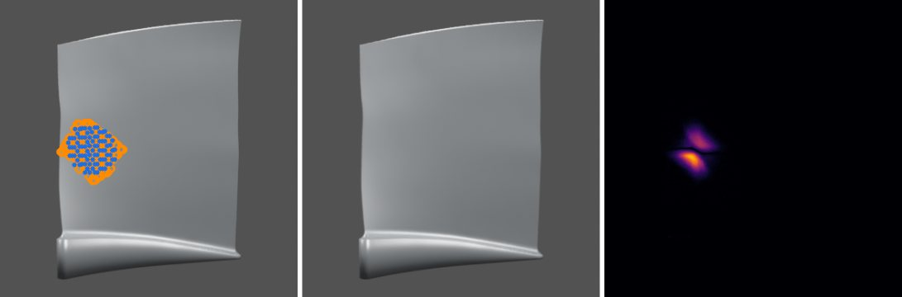

How a Jet Engine Works
Scroll to follow the air through a turbofan, the engine on almost every airliner. The 3D model on the right follows the story.
Throw air back, move forward
A jet engine turns fuel into thrust by throwing a large mass of air backwards. Pushing air back pushes the engine forward: Newton’s third law. The jet engine was invented independently by Frank Whittle and Hans von Ohain in the 1930s.
Air intake
The inlet slows incoming air to around 350 mph and delivers smooth, stable flow to the fan. Disturbed flow can make the compressor stall or surge.
The fan and bypass air
The fan accelerates a huge mass of air. Most of it, 80–90%, flows around the core through the bypass duct (blue), and this cooler air produces most of the thrust.
Compressor
The core air passes through 8–14 compressor stages, rings of rotating blades and fixed vanes that squeeze it to 30–50 times its inlet pressure and heat it.
Combustion
Fuel is sprayed into the compressed air and burned continuously. Only about a quarter of the air takes part in burning; the rest cools the chamber walls and dilutes the hot gas.
Turbine
The hot gas spins the turbines, which drive the compressor and fan through two concentric shafts: a fast high-pressure spool and a slower low-pressure spool. Turbine blades run in gas hotter than their own melting point, kept alive by cooling and coatings.
Exhaust and thrust
The nozzle accelerates the remaining core gas backwards at 1,200–1,500 mph. Yet the core gives only 20–25% of the thrust: the bypass air from the fan gives the other 75–80%.
Where blades get damaged
Every stage holds rows of precision blades. The cold front stages take impacts from birds, stones and ice (dents and nicks); the compressor erodes; the hot turbines crack and lose their coatings. Engines must survive a 4-pound bird strike and run 25,000–50,000 hours between overhauls, so blades are inspected regularly.
Proving damage from photos
A dark spot in a blade photo can be damage, a stain, a lighting change or a moved camera. BladeDelta compares a few calibrated photos with the blade’s healthy CAD model and reports damage in 3D only when the photos prove it; otherwise it says “not enough evidence”.

On computer-rendered blades: 51% of visible dents found at a 5% false-alarm rate (other methods ≤ 19%); all 22 located hairline cracks recognised as cracks.
Step through the method in 3DResultsFacts paraphrased from The Flying Engineer, AerospaceAnswers and HowEnginesWork; typical ranges for modern engines. The 3D model is simplified and not to scale. 2D illustrated version.